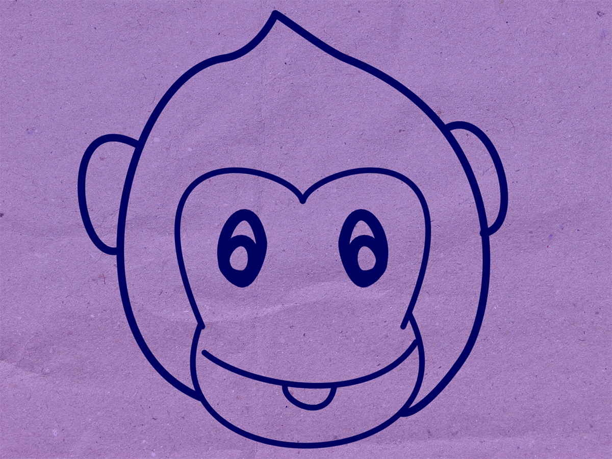

Paper: Self-Control in Capuchin Monkeys
Published in Behavioural Processes [2016, 129:68-79]

The Story

Problem
Good things come to those who wait right?
Self-control is when you delay taking a reward for an even better one later. It's something that a lot of us struggle with in day to day life when it comes to things like financial decisions and health and well being. If humans have trouble with this, what level of self-control can we expect from a capuchin monkey? We already know that capuchins can improve when it comes to self-control based tasks, but what is the key to this improvement? This is the question we asked during our studies.

Methodology
- • All capuchins experienced the same two conditions, the Rotating Tray task and the Accumulation task.
- • The Accumulation task is just like those videos you might have seen of children sitting at a table with a plate where the researcher is placing one marshmallow after another on the plate. The rules are simple, the longer you wait, the bigger the reward.
(We used capuchin-appropriate food of course, a marshmallow is almost half the size of their head after all.) - • The Rotating Tray task was inspired by a sushi conveyor belt. If a plate you're not interested comes down the belt, you can pass over it in favor of a plate you prefer later. This idea translated to a rotating tray with two plates were fixated. These rotated towards and away where the capuchins were situated. If the capuchins didn't take what was on the plait, they could wait and see if they liked the next plate (which always had a larger quantity of food) better.
- • The Accumulation task is just like those videos you might have seen of children sitting at a table with a plate where the researcher is placing one marshmallow after another on the plate. The rules are simple, the longer you wait, the bigger the reward.
- • The temporal and reward parameters varied depending on the accumulation task, this let us isolate desired variables to hone in on what significant effects were in play in the study.
- • There were a set of experienced monkeys whom we studied along with a group of task-naïve monkeys which acted as a sort of control for the previous group.
What we Found
testing.
Features
The U-Rack is a bicycle security ecosystem that addresses safety on several fronts.
Part One: Rack
words words WAOW WORDS
words words WAOW WORDS

Part Two: Lock
Nulla viverra sem sit amet arcu tincidunt, at ultricies nisi hendrerit. Suspendisse blandit nisl id tincidunt ullamcorper. Etiam fringilla neque nibh, id sollicitudin lectus vestibulum non. Phasellus tincidunt sem purus, vel viverra ipsum viverra et. Donec dolor lorem, semper sagittis orci in, varius aliquam nisl.
Nulla viverra sem sit amet arcu tincidunt, at ultricies nisi hendrerit. Suspendisse blandit nisl id tincidunt ullamcorper. Etiam fringilla neque nibh, id sollicitudin lectus vestibulum non. Phasellus tincidunt sem purus, vel viverra ipsum viverra et. Donec dolor lorem, semper sagittis orci in, varius aliquam nisl.

Part Three: App
Nulla viverra sem sit amet arcu tincidunt, at ultricies nisi hendrerit. Suspendisse blandit nisl id tincidunt ullamcorper. Etiam fringilla neque nibh, id sollicitudin lectus vestibulum non. Phasellus tincidunt sem purus, vel viverra ipsum viverra et. Donec dolor lorem, semper sagittis orci in, varius aliquam nisl. Integer posuere mollis ipsum et imperdiet. In in est ac eros maximus consequat.
Nulla viverra sem sit amet arcu tincidunt, at ultricies nisi hendrerit. Suspendisse blandit nisl id tincidunt ullamcorper. Etiam fringilla neque nibh, id sollicitudin lectus vestibulum non. Phasellus tincidunt sem purus, vel viverra ipsum viverra et. Donec dolor lorem, semper sagittis orci in, varius aliquam nisl. Integer posuere mollis ipsum et imperdiet. In in est ac eros maximus consequat.

Gallery